One typeface, not new brand directions. Six Turkish weights and four English weights, independently measured against the original.
B REJECTED · A NOT APPROVED · NO WINNER SELECTED
01 / VISUAL AUTHORITY
The original. Not a font specimen.
This JPEG governs weight, proportions, counters and spacing. B is rejected. Previous A at 700 is unapproved and superseded by these experiments.
Original file, unchanged · 1012 × 558 · no enhancement.
02 / ORIGINAL MEASUREMENTS
Two weight roles, measured separately.
Line
Flat cap
Vertical stem
V / cap
Horizontal stem
H / cap
Glyph ink density
ASYA’DA
140 px
28.00 px
0.200
24.00 px
0.171
45.2%
EĞİTİM
139 px
23.00 px
0.165
22.00 px
0.158
47.3%
EDUCATION IN ASIA
35 px
5.00 px
0.143
4.00 px
0.114
39.9%
Neutral ink L<140, approximately 50% edge coverage; original pixels, no interpolation. Approximately ±1 native pixel uncertainty, especially significant on 35px English caps. Vertical probes: D/E/I/T/M/N/U stems. Horizontal probes: E arms, T bar (off-centre), A crossbar. Density is mean filled fraction inside non-I glyph ink boxes (I is excluded because its filled rectangle always reads 100%), not an approval score.
Requested common width: 881px. Original TR2 and English measures differ, so unified specimens necessarily change spacing; the glyphs never stretch. A negative Y/A bounding-box gap need not mean actual ink collision.
03 / TURKISH · ONE TYPEFACE, SIX WEIGHTS
Compare the weight, then the shape.
Same source flat cap heights: 140px / 139px. Guides mark the shared flat-cap and baseline. Jost’s pointed A/M overshoots are retained and reported, not compressed. Every original/candidate pair uses the identical pixel scale; scroll horizontally on narrow screens. Blue ink overlays the unchanged original at exactly 50% opacity.
Jost 400Turkish experiment · not selected
ORIGINAL / TR1
JOST 400 / COMMON WIDTH 881
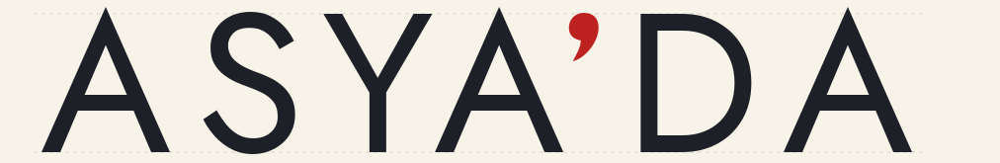
Show 50% transparent overlay · same scale
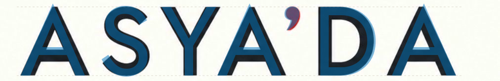
TR1: vertical 17.00px (-11.00 vs source), horizontal 16.00px (-8.00), glyph density 31.5%.
ORIGINAL / TR2
JOST 400 / COMMON WIDTH 881
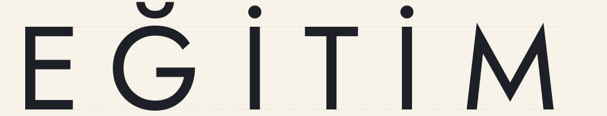
Show 50% transparent overlay · same scale
TR2: vertical 17.00px (-6.00 vs source), horizontal 15.81px (-6.19), glyph density 36.3%.
Jost 450Turkish experiment · not selected
ORIGINAL / TR1
JOST 450 / COMMON WIDTH 881
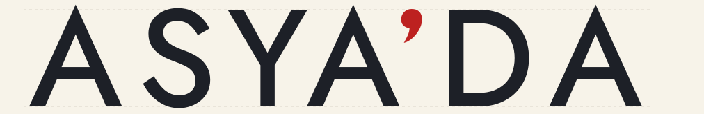
Show 50% transparent overlay · same scale
TR1: vertical 20.50px (-7.50 vs source), horizontal 18.00px (-6.00), glyph density 35.5%.
ORIGINAL / TR2
JOST 450 / COMMON WIDTH 881
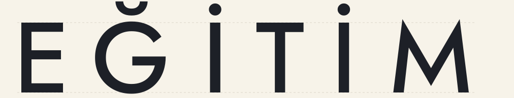
Show 50% transparent overlay · same scale
TR2: vertical 20.25px (-2.75 vs source), horizontal 18.50px (-3.50), glyph density 40.8%.
Jost 500Turkish experiment · not selected
ORIGINAL / TR1
JOST 500 / COMMON WIDTH 881
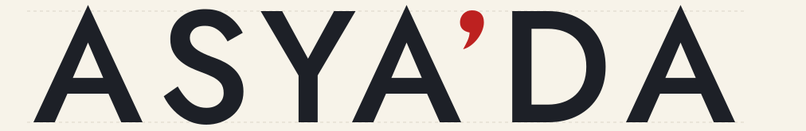
Show 50% transparent overlay · same scale
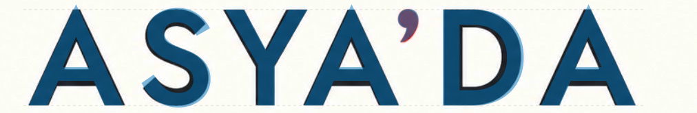
TR1: vertical 24.25px (-3.75 vs source), horizontal 20.00px (-4.00), glyph density 39.0%.
ORIGINAL / TR2
JOST 500 / COMMON WIDTH 881
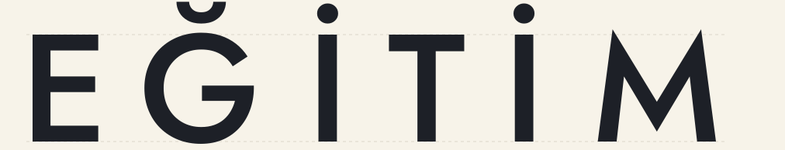
Show 50% transparent overlay · same scale
TR2: vertical 23.50px (+0.50 vs source), horizontal 21.12px (-0.88), glyph density 44.9%.
Jost 550Turkish experiment · not selected
ORIGINAL / TR1
JOST 550 / COMMON WIDTH 881
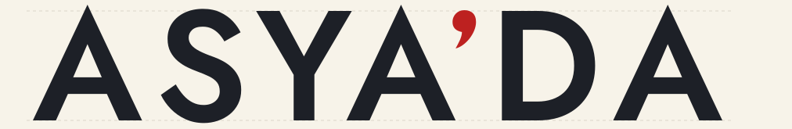
Show 50% transparent overlay · same scale
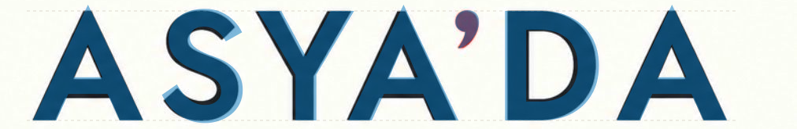
TR1: vertical 26.75px (-1.25 vs source), horizontal 21.50px (-2.50), glyph density 41.4%.
ORIGINAL / TR2
JOST 550 / COMMON WIDTH 881
Show 50% transparent overlay · same scale
TR2: vertical 26.25px (+3.25 vs source), horizontal 23.00px (+1.00), glyph density 47.7%.
Jost 600Turkish experiment · not selected
ORIGINAL / TR1
JOST 600 / COMMON WIDTH 881
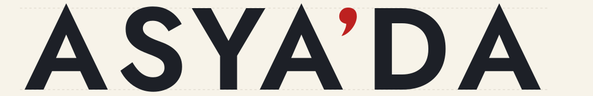
Show 50% transparent overlay · same scale
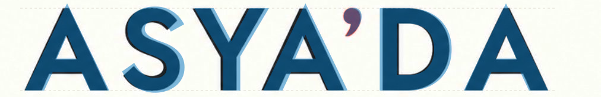
TR1: vertical 29.25px (+1.25 vs source), horizontal 22.50px (-1.50), glyph density 43.5%.
ORIGINAL / TR2
JOST 600 / COMMON WIDTH 881
Show 50% transparent overlay · same scale
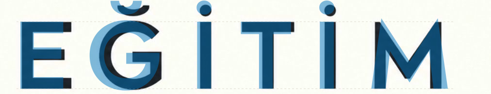
TR2: vertical 28.50px (+5.50 vs source), horizontal 24.81px (+2.81), glyph density 50.3%.
Jost 650Turkish experiment · not selected
ORIGINAL / TR1
JOST 650 / COMMON WIDTH 881
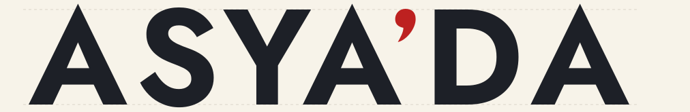
Show 50% transparent overlay · same scale
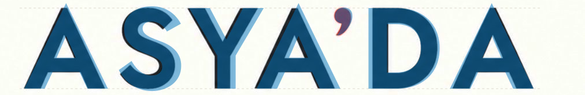
TR1: vertical 32.00px (+4.00 vs source), horizontal 24.25px (+0.25), glyph density 45.7%.
ORIGINAL / TR2
JOST 650 / COMMON WIDTH 881
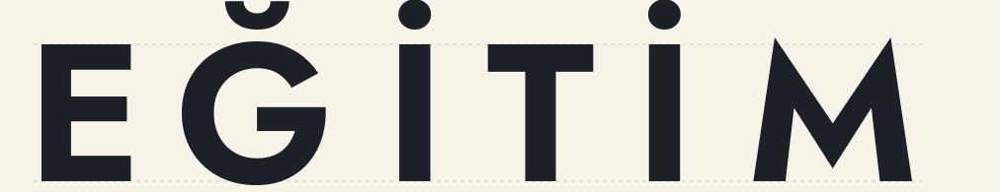
Show 50% transparent overlay · same scale
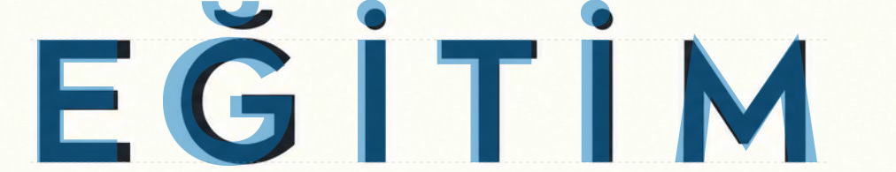
TR2: vertical 31.00px (+8.00 vs source), horizontal 26.81px (+4.81), glyph density 53.0%.
04 / ENGLISH · SEPARATE LIGHT-WEIGHT STUDY
A distinct, lighter role.
200 / 250 / 300 / 350. All 35px caps, identical scale. If the measured source lies outside this range, it is reported—not forced to fit.
Jost 200English experiment · not selected
ORIGINAL ENGLISH
JOST 200 / CAP 35 PX
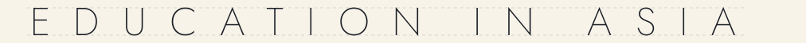
Show 50% transparent overlay · same scale
Vertical 1.75px (-3.25); horizontal 1.75px (-2.25); density 15.8%.
Jost 250English experiment · not selected
ORIGINAL ENGLISH
JOST 250 / CAP 35 PX
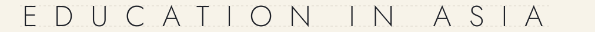
Show 50% transparent overlay · same scale
Vertical 2.25px (-2.75); horizontal 2.00px (-2.00); density 20.3%.
Jost 300English experiment · not selected
ORIGINAL ENGLISH
JOST 300 / CAP 35 PX
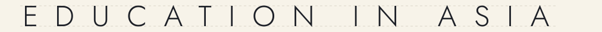
Show 50% transparent overlay · same scale
Vertical 2.75px (-2.25); horizontal 2.75px (-1.25); density 24.7%.
Jost 350English experiment · not selected
ORIGINAL ENGLISH
JOST 350 / CAP 35 PX
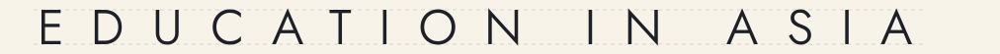
Show 50% transparent overlay · same scale
Vertical 3.50px (-1.50); horizontal 3.25px (-0.75); density 30.1%.
05 / GLYPH FIDELITY
Changing weight cannot change every letterform.
Original first, then six Turkish weights. G: body alone; Ğ: original breve included. Left-ink/baseline aligned at source cap height, no width normalization. Zoom uses real outlines, not upscaled tracing.
Measured-stem review subset: Turkish [500, 550]; English [300, 350]. Two closest sampled stem matches per role—not approved candidates. Shape fidelity remains unresolved. All 24 pairings remain available; changing a preview is not a selection.
Exact 400:370 seal geometry, fixed across trials. Established 85px gap / 44px padding. Offset previews move only the wordmark relative to the fixed seal; positive values move it downward. The previous alternatives stay untouched: historical alignment review. No alignment chosen.
07 / LIMITATIONS & VERIFICATION
No claim of exact fidelity.
Jost cannot reproduce this reference by weight changes alone. The actual rendered comparisons show:
A: Jost has a pointed, taller apex instead of the source’s small flat top; the triangular counter is larger/taller at 500. The source counter is 34×39px versus 38×44px at 500. The crossbar thickness/height also differs.
S: Jost is wider and its upper/lower bowl balance and terminal cuts differ. The source is compact, with a fuller spine; increasing weight changes density but not the same silhouette.
D: Jost’s bowl/counter is more open. At 500 the counter is about 69×96px versus the source’s 57×87px. The source stem is 28px; Jost 500 is about 24px.
G: decisive structural mismatch: the source has a squared return and vertical inner edge below the bar; Jost continues around a circular lower-right bowl. Jost’s body is also wider: about 141px at 500 versus 128px.
M: decisive structural mismatch: the source has upright outer stems, flat shoulders and a blunt central junction. Jost has splayed sides, pointed high shoulders and a sharp lower V. At 500 it is about 153px wide versus 138px.
Ğ: inherits G’s mismatch. Jost’s breve is deeper and sits higher than the shallow source cup; its dimensions change with weight.
İ: the dot is real and present, but its size and clearance differ by weight. Around 500 the dot is roughly 27×26px versus about 24×24px in the thresholded source.
English: all requested samples remain thinner than the original under the same measurement method. Jost 350 is closest within this set (vertical ≈3.5px vs source ≈5px; horizontal ≈3.25px vs ≈4px), but is not an exact weight match. This is visible as well as measured. The source is still lighter than Turkish in stem/cap ratio and apparent size; that does not mean its font weight number must be 200–350 in Jost.
No single sampled Turkish weight matches both rows perfectly. The source’s D stem in TR1 is about 28px; its E/I/T/M stems in TR2 are about 23px. The 500/550 subset is only an advisory compromise, not a winner. Clean font contours are necessary but do not establish fidelity.
Muse multimodal advisory review: independently flagged A/M/G structure, weight mismatch and English underweight after inspecting the actual rendered comparisons. Not approval. Review and factual reconciliation.
Body proportions: original / review samples
Glyph
Source W/H
Jost 500 W/H
Jost 550 W/H
Source counter
Jost 500 counter
A
0.993
0.929
0.944
34.0 × 39.0
38.0 × 44.0
S
0.669
0.689
0.703
open
open
D
0.807
0.838
0.850
57.0 × 87.0
68.8 × 95.5
G
0.895
0.978
0.983
open
open
M
0.993
1.046
1.063
open
open
Widths and heights are actual ink bounds at the shared flat-cap scale, not normalized square glyphs. Jost’s A/M pointed overshoots remain visible; they have not been flattened or compressed.
HUMAN TYPOGRAPHY REVIEW PENDING
B rejected and untouched; A not approved.
Separate variable-font instances for Turkish and English. No heavy-700 production default.
All letters: real Jost outlines. One source-matched red comma correction, five deliberate cubic segments in the measured 30×49px envelope, shared unchanged across trials. Not a custom alphabet and not B geometry.
Common 881px vector measure; independently tested with a padded 1000px wordmark render, not clipping. Worst measured edge error: 0.0px across all 24 pairings.
Canonical seal SHA-256: 8f5d46f0302c4cc7e3765d3bfce9445f842dbd92f1e0f8fbe99f9f509c77e11a.
No canonical files updated, no winner or alignment selected.